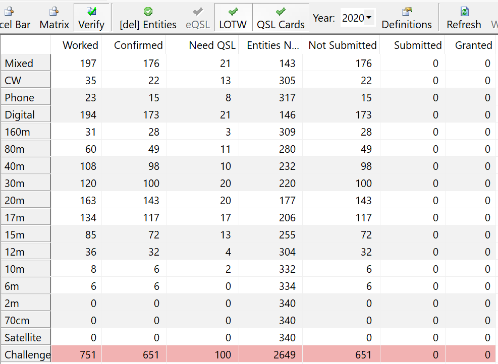

[Date Prev][Date Next][Thread Prev][Thread Next][Date Index][Thread Index]
Re: [NCDXC Chat] What was your best DX of 2020?
Here is the effort for (only) the year to date (in between
chores, station building and upgrades and other distractions):

The new station went online in late
spring; prior to that long coax reached out to the tower from
upstairs.
Probably the most fun was the VP8PJ
South Orkney team with an amazing effort. I love the hunt of a
DXpedition and the attempt to fill the entire dance card for every
team.
They even heard me on 160 FT8 AND CW
(confirmed) when I was limited to 500 watts only and an
inefficient antenna. And 60M FT8 with the 100 watt/dipole
limitation (done twice, because it was so easy I couldn't believe
it).
TI9A provided 8 band slots, FT8 and CW,
80-15M. The openings were either spotlights or just not quite
here this far north.
Working Egypt (twice on FT4, once on
FT8) was also fun. Much of the Middle East, 'woke up' this year;
whoo hoo!
Getting on 6M for the first time
brought me HI and AF, heard in Asia (legal max power) but not
hearing them (FT8); that will be an interesting place to be.
With the upper HF bands picking up,
I've added well over 100 new band mode slots (almost all digital,
some CW, a couple phone) over the last 7 weeks alone.
I'm hopeful that is a sign of better
days ahead; I'm sure we ALL use that! I'm thankful it's been a
good year and the bands are turning around in our favor.
73 es Happy Thanksgiving (in the US),
Rick, NK7I
On 11/25/2020 3:04 PM, Paul N6PSE via
Chat wrote:
2020 is almost over, what was your best DX of 2020?
Looking over my log, I was crazy busy on FT8 and filled a
lot of band slots. I don't think I had any new countries this
year but the highlights are:
Worked VP8PJ So Orkney in February from 15m to 160m on
SSB/CW, RTTY and FT8.
I also worked at E44CC Palestine in Feb for a few band
slots.
TI9A Cocos Island was also great fun in early February.
Working SU3YM, SU1SK, HZ1ZM on FT8 during the Summer months
were also memorable.
What has been your best DX thus far?
Paul N6PSE
H A P P Y T H A N K S G I V I N G !
_______________________________________________
Chat mailing list
Chat@ncdxc.org
http://mail.ncdxc.org/mailman/listinfo/chat_ncdxc.org